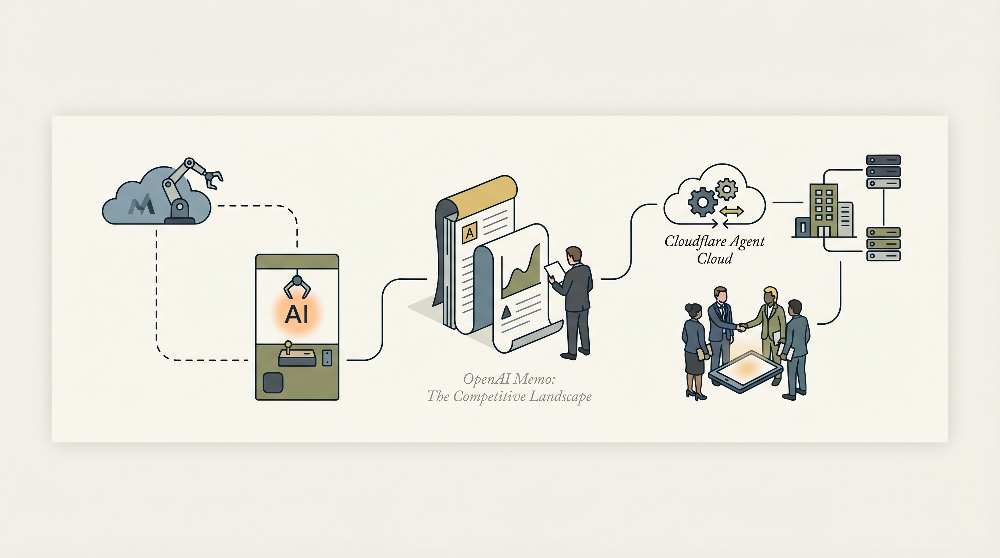

微软测试将类似OpenClaw的AI机器人集成到Copilot中
两克伴AIGC日报
2026-04-14 星期二

本期关注：大厂加速AI机器人与代理布局，微软测试Copilot集成AI机器人，OpenAI强化竞争战略，Cloudflare引入GPT-5.4推动代理工作流；同时，Mercury无代码工具解决AI代理管理难题，OQP验证协议规范代理输出，推动AI代理标准化与企业应用深化。
📰 行业动态
OpenAI发布内部备忘录，强调竞争战略和用户锁定
Cloudflare与OpenAI合作，在Agent Cloud中引入GPT-5.4和Codex
Anthropic继续与特朗普政府沟通Mythos模型
Meta的AI智能眼镜引发隐私和安全性担忧
🔥 今日焦点
标题：Show HN: Mercury – No-code orchestration for human and agent teams
Mercury（mercury.build）是由Naveen等三位创始人共同打造的一款无代码编排工具，旨在解决大型企业中AI代理团队管理难题。在过去一年中，团队致力于部署AI代理，却发现代理本身运行良好，但管理却陷入混乱。从终端的Claude Code到浏览器中的研究代理，再到Slack机器人和其他窗口中的调度助手，各个代理分散在不同平台，缺乏统一的管理界面，导致团队难以追踪运行状态、任务分配以及连接关系。
标题：Show HN：OQP——AI代理验证协议
OQP（Open Verification Protocol）是由Aamir21提出的一种针对AI代理的验证协议。随着AI代理在编写和部署代码过程中的自主性日益增强，如何确保其输出的代码满足业务需求成为一个亟待解决的问题。OQP旨在为AI代理的验证提供一套标准化的解决方案。
Vercel CEO Guillermo Rauch近期表示，随着AI生成应用和代理的爆发式增长，公司已准备好进行IPO。尽管许多在ChatGPT出现之前成立的初创公司正努力适应AI时代，但Vercel，这家成立10年的开发工具和网站托管平台，却因AI应用和代理的兴起而受益匪浅。这一消息对于AI领域具有重要意义，它不仅展示了AI技术在推动企业增长方面的潜力，也为其他企业提供了借鉴。Vercel的成功表明，在AI时代，那些能够快速适应并利用AI技术优势的企业，将有望实现跨越式发展。
---
荣耀近日发布了自研终端侧AI智能体YOYO Claw，并将其首发搭载于荣耀MagicBook系列轻薄本中，旨在重新定义AI PC。YOYO Claw预设5大主虾、23个子虾，覆盖教育、办公、学术研究、内容创作和智能辅助等场景，深度嵌入系统，并针对垂直化应用场景进行适配。YOYO Claw在任务执行中，对比OpenClaw，Token消耗平均节省50%，任务成功率超越OpenClaw。此外，YOYO Claw支持手机、PC、平板多端任务联动，实现全家庭联动。荣耀为YOYO Claw建立了安全护城河，确保用户设备安全。YOYO Claw的发布，标志着荣耀在AI领域迈出了重要一步，有望推动AI PC的发展，为用户带来更加便捷、智能的体验。
📚 深度长文
本文深入探讨了如何利用生成式人工智能培养面向未来的技能。文章核心观点在于，随着人工智能技术的飞速发展，教育领域亟需创新，以培养适应未来社会需求的人才。作者从多个角度阐述了这一观点，包括：
首先，文章指出，生成式人工智能具有强大的创造力和学习能力，能够模拟人类思维过程，为教育创新提供有力支持。通过引入生成式AI，教育者可以设计出更加个性化、互动性强的教学方案，激发学生的学习兴趣和潜能。
本文深入剖析了当前人工智能领域的现状，以斯坦福大学人机中心人工智能研究所发布的2026年AI指数报告为核心，揭示了AI行业的真实面貌。文章指出，尽管AI领域存在诸多争议和误解，但通过详实的数据和分析，我们可以清晰地看到AI技术的飞速发展及其对各行各业的影响。报告从多个维度对AI进行了全面评估，包括技术进步、产业应用、社会影响等，为读者提供了全面、客观的AI发展现状。阅读本文，有助于AI从业者深入了解行业动态，把握发展趋势，为未来的工作提供有益的参考。
---
本文深入探讨了人工智能领域内意见分歧的原因。作者Will Douglas Heaven以斯坦福大学AI指数年度报告为切入点，指出在快速发展的AI行业中，人们对于AI的看法为何如此分化。文章分析了关键论据，包括技术进步的迅猛、伦理问题的复杂性以及社会对AI的期待与恐惧。作者强调了理解这些分歧的重要性，认为它们揭示了AI领域深层次的挑战和机遇。阅读本文，AI从业者不仅能获得对当前AI发展态势的全面了解，还能从中获得独特的见解，有助于深化对AI未来发展的思考。
🛠️ 产品推荐
Show HN: Beautiful Clickable Demos是一款开源技能，旨在轻松创建可点击的演示。用户只需将其集成到Claude Code中，即可自动生成HTML/CSS演示，展示核心功能。该产品有效解决了传统演示方式难以直观展示产品功能的痛点，帮助用户快速理解产品特性，提升用户体验。通过“展示而非讲述”的方式，Beautiful Clickable Demos降低了用户创建账户和了解产品的门槛，为技术从业者提供便捷的演示解决方案。
---
Show HN: On-Device vs. Cloud LLMs for Agentic Tool Calling in a Real iOS App是一款专注于iOS应用中的设备端与云端大型语言模型（LLM）对比研究的工具。该产品通过对比分析，揭示了在真实iOS应用中，设备端LLM与云端LLM在工具调用方面的性能差异。它为开发者提供了关于如何选择和使用LLM的宝贵参考，有助于优化应用性能，提升用户体验。该产品特别强调其AI能力，通过创新性地对比两种LLM的优缺点，为技术从业者提供了有益的启示。
---
Show HN: AImeter 是一款专注于AI成本和价值评估的工具。该产品采用零依赖、本地化、无需云端部署的设计理念，帮助用户轻松测量使用AI代理时的成本与收益。AImeter 的核心功能在于为用户提供直观的成本与价值分析，助力用户优化AI应用，降低成本，提升效率。对于技术从业者而言，AImeter 是一款不可或缺的AI成本管理利器。